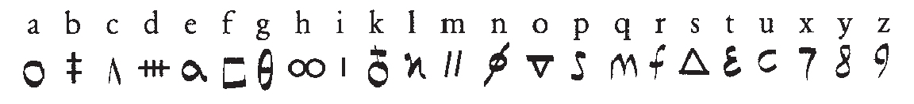
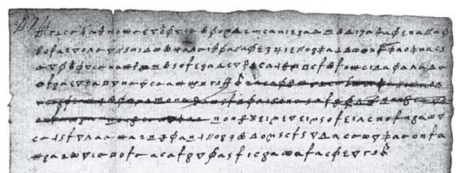
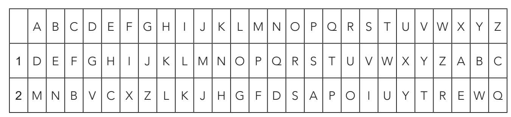
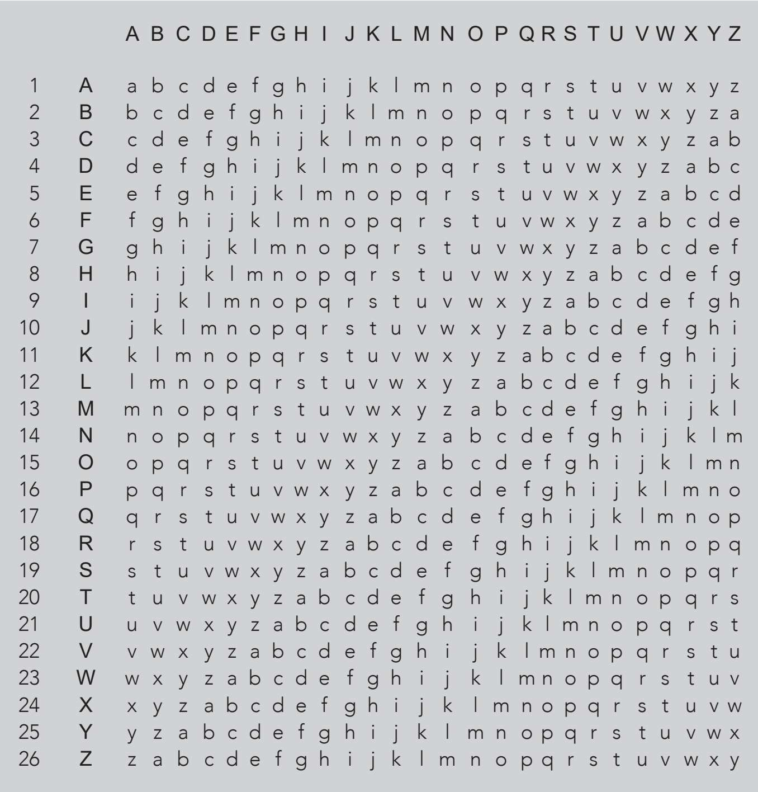
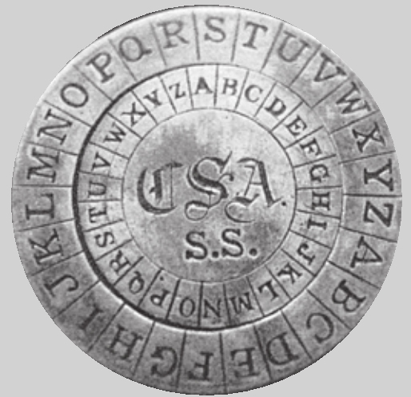
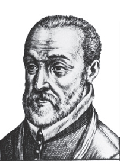
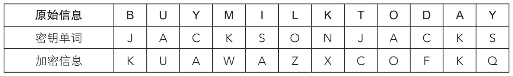
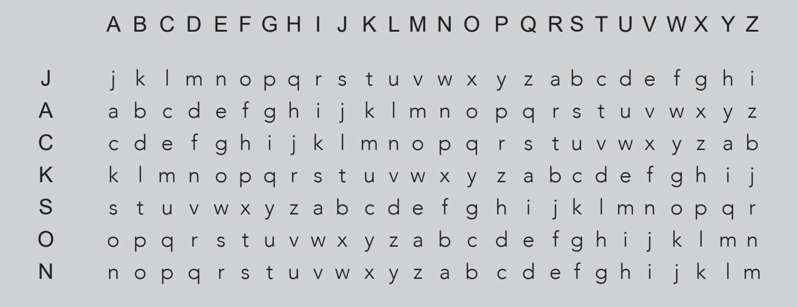
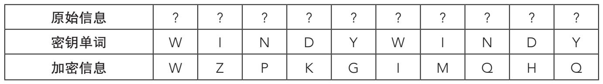

1587年2月8日，苏格兰女王玛丽因叛国罪在佛斯林费堡被斩首。之所以最终判处得如此决绝，是因在司法调查中发现玛丽与以年轻人安东尼·巴宾顿为首的几个天主教贵族勾结，意图谋杀英格兰女王伊丽莎白一世，以期缔造囊括英格兰和苏格兰在内的天主教王国，并奉玛丽为女王。证据确凿无疑，而关键证据就是伊丽莎白手下的反间谍中心发现的，反间谍中心的领头人是沃尔辛厄姆勋爵。证据包括玛丽和巴宾顿的一系列往来书信，明确表明这位年轻的苏格兰女王对于这项谋杀计划不但知晓，而且赞同。信件是用密码和代码结合的算法加密的，也就是说，不只是用其他字符交换字母，还运用了特定的符号指代某些常用的单词。玛丽的加密字母表如下所示：

玛丽的加密字母表使用符号替代字母，除此之外，与世界各地的加密者几百年来使用的方法并无二致。年轻的女王和她的同谋确信密码安全无虞，但是对她来说不幸的是，伊丽莎白手下最优秀的密码破译者托马斯·菲利普斯刚好精通频率分析，不费吹灰之力就破解了玛丽的信件。后人称此事件为“巴宾顿阴谋”，令人感到挫败的是，这个事件给了全欧洲的政府和间谍当头一棒：传统的替换算法已不再安全。在新的解密工具的威势面前，加密者不堪一击。

苏格兰女王玛丽写给同谋安东尼·巴宾顿的信，最终她被判死刑，图为信件残片。
不过，频率分析摆出的难题，早在玛丽的头颅落地前一百多年前就已经找到了应对办法。全新密码大厦的建筑师当数多才多艺的文艺复兴学者莱昂·巴蒂斯塔·阿尔伯蒂（LeonBattista Alberti）。阿尔伯蒂以建筑师和数学家著称于世，在透视学研究领域也取得了跨越性的进步。1460年，他创造了一套加密系统，在第一个加密字母表基础上添加第二个加密字母表，如下图所示：

第一行：明文字母表；第二行：加密字母表1；第三行：加密字母表2。
阿尔伯蒂提出，加密任何信息，都可以交替使用两套加密字母表。以单词“SHEEP”（绵羊）为例，第一个字母在字母表1中找对应者，即V，而第二个字母在字母表2中找到，即L，第三个字母再回到表1，其余以此类推。那么，“SHEEP”就可以加密为“VLHCS”。与之前的加密算法相比，多字母表加密算法（简称“多表加密法”）的优势即刻跃然纸上——明文中的两个E，以不同的方式加密为H和C。而且，相同的加密字母在明文中代表两个不同的字母，这令密码破译者更加迷惑。这样一来，频率分析就大大失去了优势。阿尔伯蒂从未以专著的形式正式论述过他的想法，后来这种加密方法经由同时代的两位学者各自独立发展。这两位分别是德国的约翰尼斯·特里特米乌斯（Johannes Trithemius）和法国的布莱兹·德·维吉尼亚（Blaise de Vigenère）。
恺撒密码使用的是单字母表加密法，即一个加密字母表对应一个明文字母表，这样一来，相同的加密字母总是对应相同的明文字母。经典恺撒密码中，D总是对应A，E总是对应B，其余依次类推。
但是，在多表加密法中，信息中的某个字母在加密字母表中可以对应很多字母。要破解一篇密文，每破解一个加密字母（在明文字母表中找到对应字母），要在不同的字母表之间往复。维吉尼亚是一位出生于1523年的法国外交官。在罗马进行为期两年的外交任务时，维吉尼亚获得了阿尔伯蒂的作品。最初，维吉尼亚对密码学的兴趣纯粹是实用的，与他的外交工作相关，但在39岁时，他放弃了自己的职业生涯，投身于一生的研究，其结果是创造了一种新的、更强大的密码。德·维吉尼亚方阵是第一个也是最著名的多表加密系统。阿尔伯蒂的密码使用两套加密字母表，然而，维吉尼亚密码使用了26种不同的加密字母表！
他的字母表包括一个由n个字母构成的明文字母表，下方会出现n个加密字母表，每个字母表以前一个字母表的第二个字母为首，依次循环。也就是说，它是一个纵横各26的方阵，如下页图所示。注意观察字母对应的对称性。字母对（A,R）=（R,A），这个关系符合所有的字母。
我们马上就能发现德·维吉尼亚方阵包括一个由n个字母构成的明文字母表，每个字母都能根据参数递增的规律转换。因此，运用恺撒密码参数，第一个加密字母表为a=1，b=2；第二个加密字母表刚好符合恺撒密码，即b=3，此后依次类推。德·维吉尼亚方阵的密钥包括知晓信息的哪些字母是加密的，以及对应的加密字母需要往下数到第几行。最简单的密钥是原始信息的所有字母往下移动一行。

圆盘游戏
多表加密有一种使用方法，那就是使用一种叫作阿尔伯蒂加密圆盘的仪器。这些密码仪方便携带，包括两个同轴圆盘，一个固定不动，上面刻有通用字母表，另一个可以转动，刻有另外一组字母表。信息发送者通过转动圆盘，把明文字母表与加密字母表匹配，匹配的最大数量与当前所用字母表的字母数相等。从阿尔伯蒂圆盘上获取的密码，不容易被频率分析破解。要想解密信息，信息接收者只需转动圆盘，转动次数与发送者一致即可。这种加密的安全性，通常与密码的秘密性息息相关，也就是可转动圆盘字母表的布置及转动的次数。一个刻有常规字母表的阿尔伯蒂圆盘，如果只有一个可转动的圆环，那么每转动一圈，就形成一个恺撒密码。美国内战中也用到了类似的仪器，今天在孩子们玩特工游戏用的玩具上也可以见到。

美国内战中南部同盟使用的阿尔伯蒂圆盘。
以此为密钥，那句经典“VENI VIDI VICI”的加密过程如下所示：
加密第一个字母V，在第二行中找到对应字母为：W。
加密第二个字母E，在第三行中找到对应字母为：G。
加密第三个字母N，在第四行中找到对应字母为：Q。
以此类推，I对应第五行：M。
V对应第六行：A。
I对应第七行：O。
D对应第八行：K。
I对应第九行：Q。
V对应第十行：E。
I对应第十一行：S。
C对应第十二行：N。
I对应第十三行：U。
外交官和密码专家
1523年，布莱兹·德·维吉尼亚出生在法国。1549年，法国政府派遣他出使罗马，在那里他开始对密码学和加密信息产生浓厚兴趣。1585年，他编写了一本开创性的专著《密码论》（Traicté des Chiffres），书中所载的加密系统令他名声大起。这套密码系统在近两百年内所向披靡，无人能解，直到1854年，英国人查尔斯·巴布奇（Charles Babbage）才将其成功破解。但奇就奇在，这一事迹直到20世纪，一组学者在研究巴布奇的个人笔记和计算时，才渐为人知。

原文加密后就是“WGQM AOKQ ESNU”。各位读者很容易就能发现，原文中本来重复的字母不再重复了。但是，所有密码专家都关心一点，那就是密码要容易识记、方便传递和易更新。破解信息的过程中，要找出密钥单词，它的字母数会等于或少于待破解信息的字母数，越短越方便使用德·维吉尼亚方阵。密钥单词的每个字母构成了字母表中每一行的首字母，之后按常规字母表顺序排列。加密时把密钥单词写在明文下方，重复排列直到明文结尾。接着，接收者以每个明文字符为横坐标，下方的密钥单词的字母为纵坐标，就能在方阵中找到对应的加密后的字母。
举例来说，如果要加密信息“BUY MILK TODAY”（今天买牛奶），密钥单词是“JACKSON”，那么：

加密后的信息就是“KUAWAZXCOFKQ”。

依据密钥单词“JACKSON”，从德·维吉尼亚方阵中提取出来的对应行。
与所有经典加密系统一样，使用德·维吉尼亚方阵解密信息与加密信息是对称的。以加密信息“WZPKGIMQHQ”为例，密钥单词是“WINDY”，则有：

先看第一行。假如(?,W)=W，我们要弄明白未知的“？”是什么。找到前面的德·维吉尼亚方阵，顺着W行找到W对应的字母A。接下来，要寻找满足条件(?,I)=Z的“?”，答案为R。其他同理。破解后的原始信息就是“ARCHIMEDES”（阿基米德）。
德·维吉尼亚方阵之所以具有历史意义，就在于它不易被频率分析破解，与之比肩的还有一种多表加密法，即格伦斯菲尔德（Gronsfeld）密码（两者在同一时期被创造，附录中有详述）。如果同一个字母可以加密成两个及以上的字母，那什么样的密码分析才能破解它呢？这个问题要等300年才能回答。